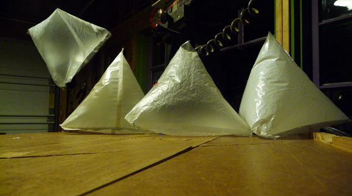

Some community participants have gone to great lengths to document their design iterations and innovations through video, still image, and textual publication. Pat Coyle of Belize Open Source produced several videos of variations on the soda bottle enclosure for cameras, narrating his proposed additions such as a bungee cord to hold the camera tightly against the bottle. Others have posted suggestions for improvements on the camera suspension to stabilize the camera platform, and Mathew Lippincott published an analysis of the permeability of different HDPE thicknesses and pigmentations, in order to identify which is most suitable for use in home-made helium balloons.
| r0.5

|